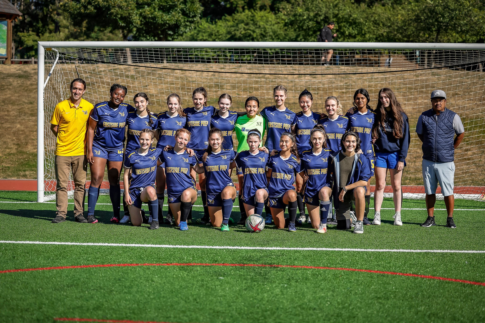
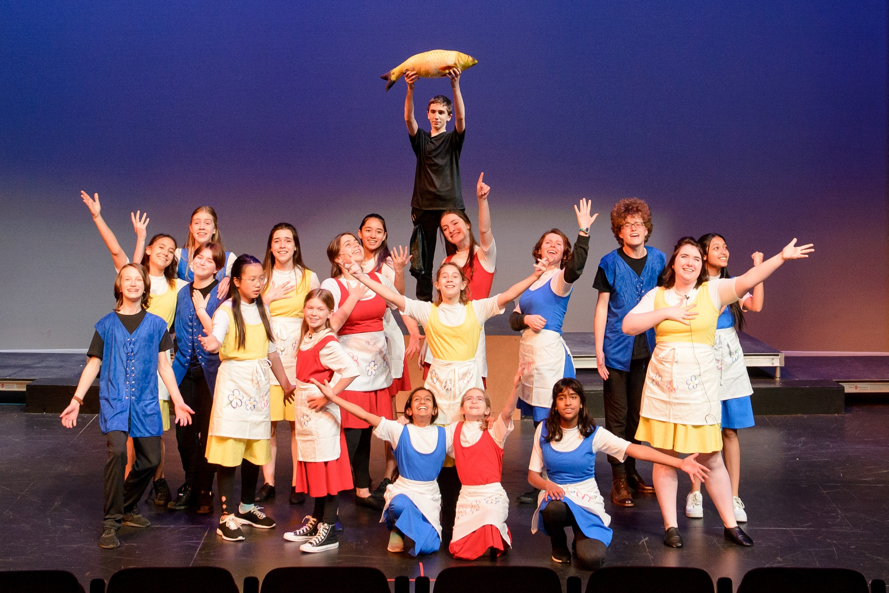

Academics are very important at Eastside Prep, but it is equally important to manage your school work with your extracurriculars and personal life. Sometimes it can feel overwhelming to balance your academic goals with outside activities, family responsibilities, and other events, but maintaining that balance will make your high school experience much more enjoyable and less stressful. Take some time during your experience at Eastside Prep to find non-academic activities that you enjoy, and to learn and practice different strategies for keeping a good work-life balance.
Free periods are a unique part of the Eastside Prep experience that are incredibly useful in finding your work-life balance. There are many different ways you can utilize your free periods; just make sure you have a plan, find an appropriate place on campus (like a quiet spot in TMAC for studying or the LPC for socializing), and choose the method that works best for you:
Make sure you're looking ahead to schedule time for school work, extracurriculars, and other events and responsibilities. Using an online or paper calendar can be very helpful in keeping organized and designating time for each aspect of your life.
You can use EPSchedule to plan out your free periods each week, and the Eastside Prep Calendar to find days off and school events, all of which are important to incorporate into your personal organization/planning system.


There are many extracurricular activities you can participate in through EPS, all of which will help you find a good work-life balance and connect with your community. You could join athletic teams (above left), theater (above right), music, or a variety of academic clubs.